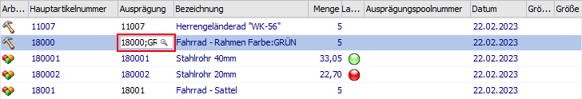
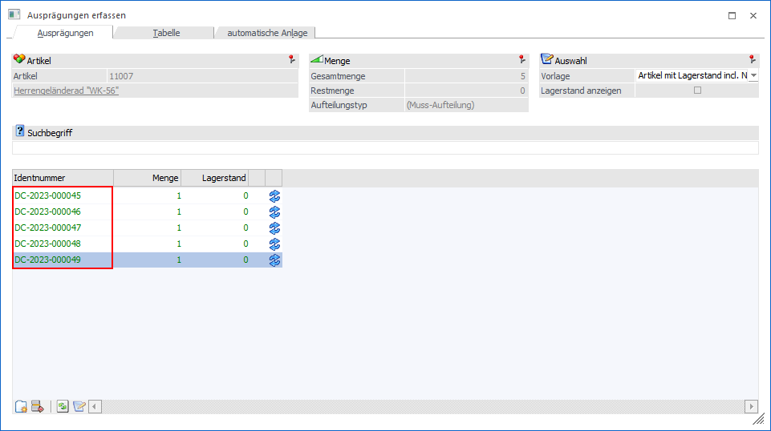
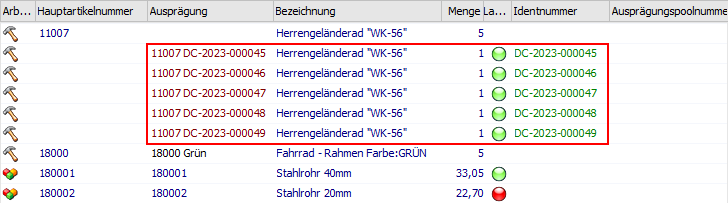
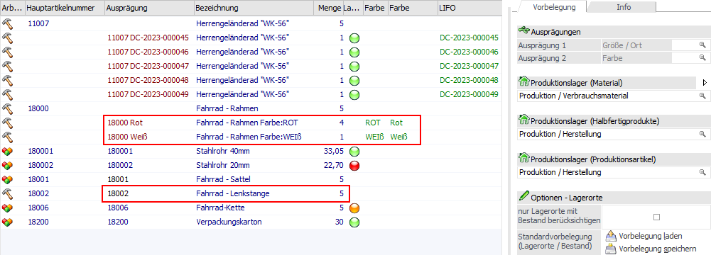
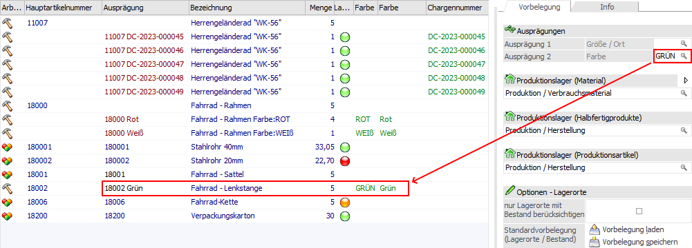

In der Zuordnung stehen unterschiedliche Vorgehensweisen zur Verfügung, um das Ausprägen bzw. das Zuweisen von Lagerorten durchzuführen.
Ausprägen
Das Ausprägen von Ausprägungsartikeln kann über 3 Varianten erfolgen:
ü Erfassen der Artikelnummer
In
der Spalte "Ausprägung" kann direkt die Artikelnummer des Ausprägungsartikels
hinterlegt werden. Dabei ist es nur möglich, die komplette Menge der
ausgewählten Zeile einer speziellen Ausprägung zuzuweisen.
Beispiel
Alle 5 benötigten Rahmen sollen
in der Farbe "Grün" lackiert sein.

ü Ausprägen über das "Ausprägungen
erfassen"
Bei Anwahl des Buttons "Ausprägung erfassen" bzw. der Taste F6 wird
das Fenster "Ausprägung erfassen" geöffnet. In diesem können die Ausprägungen
erfasst werden.
Hinweis
Handelt es sich um einen Ausprägungsartikel mit Lagerorten, so wird nach dem Ausprägen über das "Ausprägungen erfassen" direkt nach passenden Lagerorten gesucht und wenn möglich zugewiesen.
Beispiel
Jedes zu produzierende
Herrengeländerad "WK-56" erhält im Voraus eine Identnummer.


ü Vorbelegung der Ausprägung
In
dem Register Vorbelegung kann pro
Ausprägungsgruppe (hier "Größe/Ort" und "Farbe") eine Ausprägung angegeben
werden. Die Vorbelegung wird beim Bestätigen der Eingabe direkt übernommen.
Hinweis
Die jeweilige Ausprägung wird nur bei Artikeln zugeordnet, bei denen auch die Ausprägungsgruppe angelegt ist und bisher noch keine Ausprägung gewählt wurde.
Beispiel
Die Ausprägungsgruppe "Farbe"
ist den Artikeln 18000 und 18002 zugeordnet. Bei den Rahmen wurde die
Farbauswahl allerdings bereits manuell getroffen, so dass nur noch der
Komponente 18002 eine Ausprägung zugewiesen werden muss.


Achtung
Nach dem Ausprägen erfolgt die Disposition der Komponente rein über die gewählten Ausprägungen! Sollte nicht die gesamte Menge des Hauptartikels aufgeteilt worden sein, so wird die Menge nicht in der Disposition aufgeführt.
Lagerorte zuweisen
Das Zuweisen von Lagerorten kann über 3 Varianten erfolgen:
ü Automatisch bei
Produktionsauftragsanlage
Wenn lt. Aufteilungsoptionen eine Aufteilung
zumindest erfolgen kann (d.h. "2 - kann erfolgen" wurde hinterlegt), so wird bei
Auftragsanlage direkt eine Aufteilung auf Lagerorte ausgeführt. Hierbei werden
die folgenden Einstellungen berücksichtigt:
ü Lagerorte mit Bestand
Ob nur
Lagerort mit einem Lagerortbestand genutzt werden sollen ist abhängig von der
Option "nur Lagerorte mit Bestand berücksichtigten". Diese steht im Register Vorbelegung zur Verfügung.
ü Lagerort gemäß
Stücklisten
Sollte im Stücklistenstamm eine Lagerortvorgabe hinterlegt worden
sein, so wird diese angewendet. D.h. auf Grundlage dieser Vorgabe wird ein
Lagerort gesucht und dem Produktionsartikel bzw. der Komponente zugewiesen.
ü Lagerort gemäß Vorbelegung
Bei
allen Lagerortartikel ohne Vorgabe gemäß Stückliste wird die Lagerortvorbelegung angewendet. D.h.
auf Grundlage der Vorbelegung wird ein Lagerort gesucht und dem
Produktionsartikel bzw. der Komponente zugewiesen.
ü Anwahl des Buttons "Lagerorte ohne
Auswahl aufteilen"
Bei Anwahl des Buttons "Lagerorte ohne Auswahl aufteilen"
wird allen Lagerortartikel ohne Lagerorterfassung ein Lagerort zugewiesen, wobei
die Option "nur Lagerorte mit Bestand berücksichtigten", die Lagerortvorgabe
gemäß Stückliste und die Lagerortvorbelegung des Produktionsauftrags
berücksichtigt werden.
ü Manuelle Erfassung von
Lagerorten
Durch Anwahl des Tabellenbuttons "Lagerorte erfassen" oder per
Doppelklick auf das Kugel-Symbol kann das Fenster "Lagerorte erfassen" geöffnet
werden. In diesem kann eine manuelle Erfassung erfolgen.